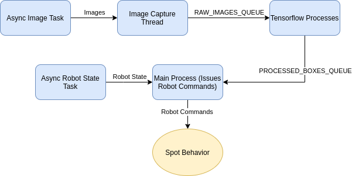

Spot Detect and Follow¶
The Spot Detect and Follow example collects images from the two front Spot cameras and performs object detection on a specified class. This detection uses Tensorflow via the tensorflow_object_detector from the Spot Tensorflow Detector example. It accepts any Tensorflow model, and it allows the user to specify a subset of detection classes included in the model. It performs this set of operations for a predefined number of iterations, blocking for a predefined amount of time between each iteration. The example then determines the location of the highest confidence detection of the specified class and walks towards the object. The walking has a built-in buffer of about 3 meters.
IF USING THIS EXAMPLE TO FOLLOW A PERSON, FOLLOW ALL SAFETY PROTOCOLS. KEEP AWAY FROM ALL STAIRCASES.
The program is organized as three sets of Python processes communicating with the Spot robot. The process diagram is shown below. The main process communicates with the Spot robot over GRPC and constantly receives images. These images are pushed into the RAW_IMAGES_QUEUE and read by the Tensorflow processes. Those processes detect objects in the images and pushes the location onto PROCESSED_BOXES_QUEUE. The main thread then determines the location of the object and issues commands to the robot to walk towards the object.
User Guide¶
This example depends on a Tensorflow model. As an example, the faster_rcnn_inception_v2_coco Tensorflow model pre-trained on COCO dataset can be obtained here. That model is not supported on Windows or MacOS.
The pre-trained models may not be good at detecting some classes when using the robot’s cameras, as the fisheye distortion, low resolution, and black and white images affect image quality. For example, pre-trained models may not perform well at detecting “sports balls” due to the lack of color. The ssd_mobilenet_v2_coco and faster_rcnn_inception_v2_coco have been tested to work well at detecting humans.
Installation (Only if you want to run without Docker)¶
To install this example on Ubuntu 18.04, follow these instructions:
Install python3:
sudo apt-get install python3.6Install pip3:
sudo apt-get install python3-pipInstall virtualenv:
python3 -m pip install virtualenvChange into example directory:
cd spot_detect_and_followCreate virtual environment (one time operation):
virtualenv -p {PATH_TO_PYTHON3_EXECUTABLE} venv. The path to the executable is the output ofwhich python3command, usually set to/usr/bin/python3.Start virtual environment:
source venv/bin/activateInstall dependencies:
python3 -m pip install -r requirements.txtAdd the tensorflow detector module to your PYTHONPATH:
export PYTHONPATH=/path/to/examples/spot_tensorflow_detector:$PYTHONPATHRun
python3 -m pip install -r requirements.txtwithin thespot_tensorflow_detectordirectoryRun the example using instructions in the next section
To exit the virtual environment, run
deactivate
Execution¶
Prior to running the example, you will need to acquire estop access from another source such as from a connected laptop or tablet. This allows you to emergency stop the robot since this application does not have a GUI. This example follows the common pattern for expected arguments. It needs the common arguments used to configure the SDK and connect to a Spot:
hostname passed as the last argument
username and password should be set in the environment variables
BOSDYN_CLIENT_USERNAMEandBOSDYN_CLIENT_PASSWORD.
On top of those arguments, it also needs the following arguments:
–model-path (required) argument that specifies the path of the Tensorflow model (a file in .pb format)
–detection-class (required) argument that specifies the detection class from the Tensorflow model to follow (a list of class codes can be found in COCO_CLASS_DICT in
spot_detect_and_follow.py)–detection-threshold (optional) argument that specifies the confidence threshold (0-1) to use to consider the Tensorflow detections as real detections. Lower values increase false positives. Higher values may lower detection rate; defaults to 0.7
–number-tensorflow-processes (optional) argument that specifies the number of Tensorflow processes to start. When running with the GPU, 1 process is enough since the GPU takes care of parallelization; defaults to 1
–sleep-between-capture (optional) argument that specifies the amount to sleep in seconds between each image capture iteration. Increasing the value of this argument reduces the size of the queues, but also reduces the rate of command updates at the end of the pipeline; defaults to 1.0.
–max-processing-delay (optional) argument that specifies max delay in seconds allowed for each image before being processed; images with greater latency will not be processed; defaults to 7.0.
The simple command to run with the default values is:
python3 spot_detect_and_follow.py --model-path <path_to_pb> --detection-class <integer class id> ROBOT_IP
For example, run the example with --model-path pointing to the frozen_inference_graph.pb file in the faster_rcnn_inception_v2_coco_2018_01_28 folder created from untar-ing the model file downloaded from the instructions above, and with --detection-classes argument set to 1 to detect people in the camera images.
Running in Docker¶
Please refer to this document for general instructions on how to run software applications on SpotCORE as docker containers.
This example provides a Dockerfile for running in a container. This requires installing Nvidia Docker. You can follow the instructions at https://github.com/NVIDIA/nvidia-docker to install Nvidia Docker. Nvidia Docker is preinstalled on the CORE I/O.
To build the image, you’ll need to first copy over the tensorflow detector file first:
cp ../spot_tensorflow_detector/tensorflow_object_detection.py .
sudo docker build -t spot_detect_and_follow:x64 -f Dockerfile.x64 .
If you are building for the CORE I/O, run this instead:
# If you are building on an x64 machine
sudo apt-get install qemu binfmt-support qemu-user-static # Install the qemu packages
sudo docker run --rm --privileged multiarch/qemu-user-static --reset -p yes # This step will execute the registering scripts
# Build the Docker image for L4T
cp ../spot_tensorflow_detector/tensorflow_object_detection.py .
sudo docker build -t spot_detect_and_follow:l4t -f Dockerfile.l4t .
To run a container, replace ROBOT_HOSTNAME and <absolute_path_to_pb> with the full path to the pb model file in the command below:
sudo docker run -it --network=host spot_detect_and_follow --username $USER --password $PASSWORD ROBOT_HOSTNAME
On CORE I/O:
sudo nvidia-docker run -it --network=host spot_detect_and_follow:l4t --username $USER --password $PASSWORD ROBOT_HOSTNAME
To take advantage of GPU support if it is available on your system, add --gpus all in the command above.